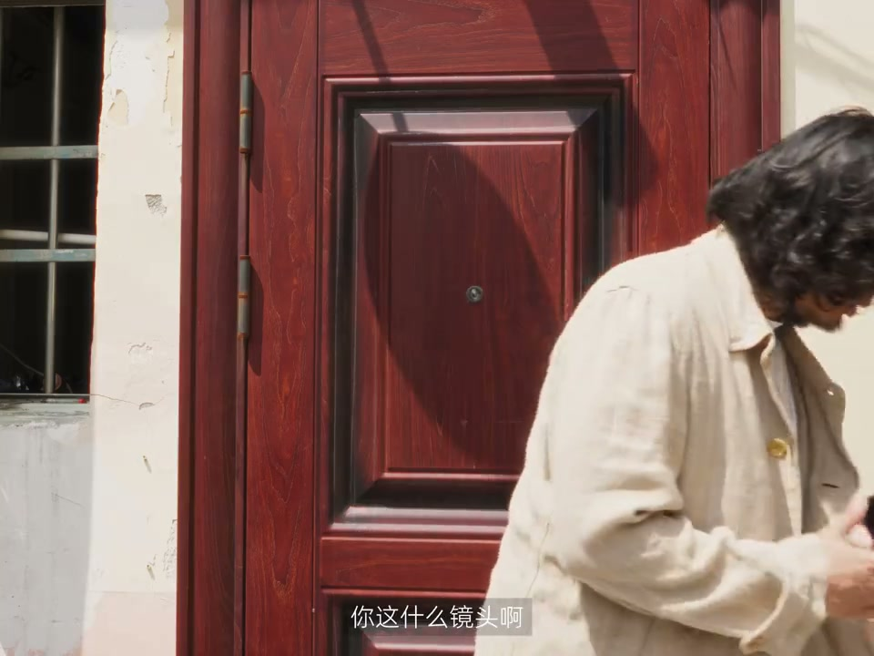
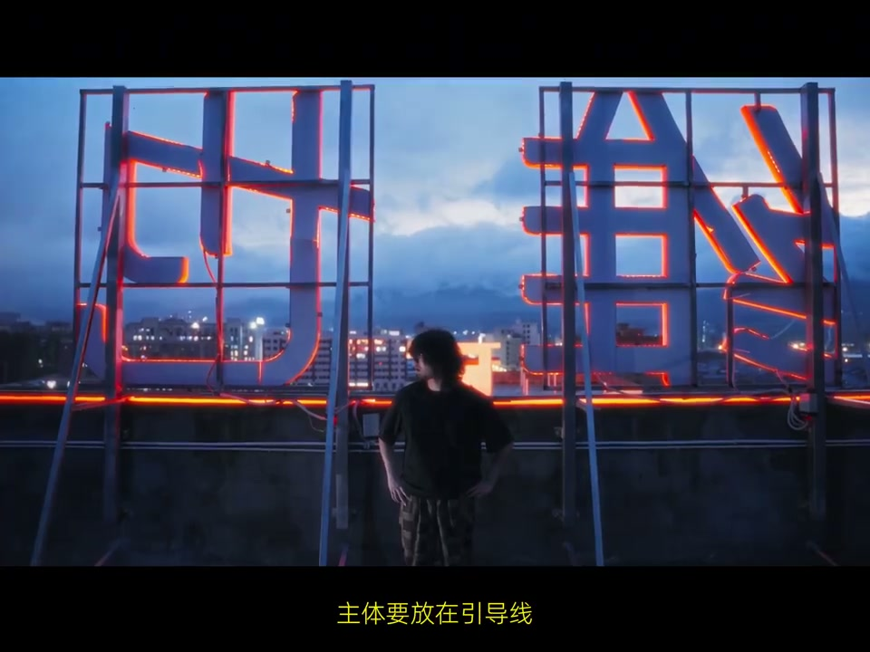
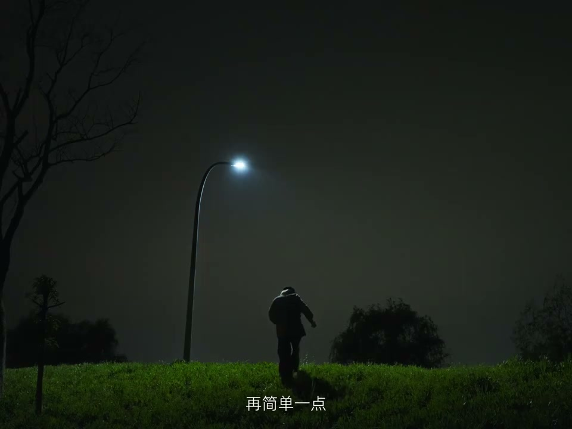
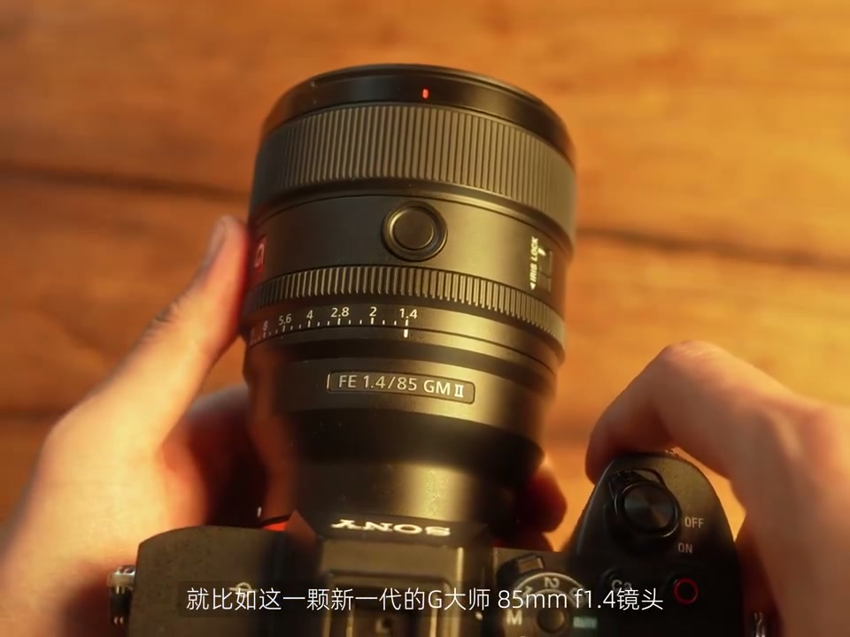
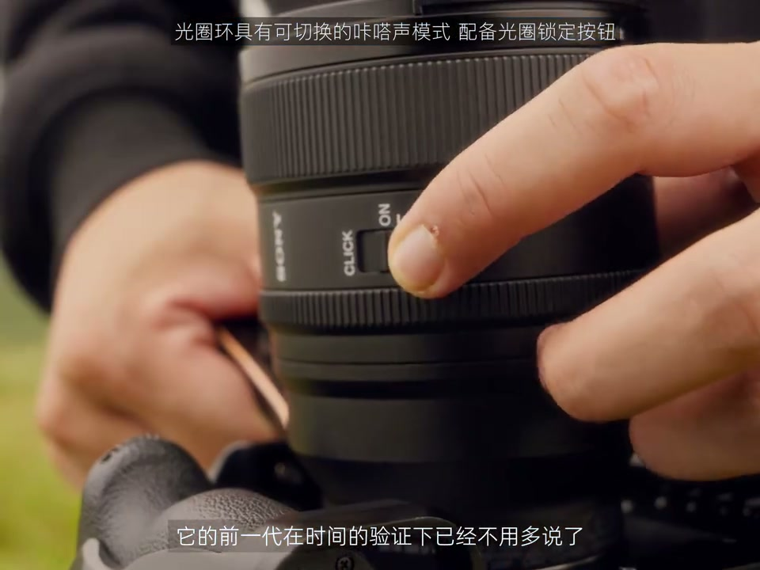

01
中文
如何让自己在画面里看起来更醒目？这里很难。
EN
How to stand out in a frame? That's a tough one.
表达提示stand out（醒目）

Scene English · 拍摄 · 主体醒目
How to Attract the Eye? Try a Portrait Lens | Sony 85mm GM II
🎧 语音讲解
Color Contrast
情境突出主体的第一个方法：穿突出的颜色，站在大片色块的环境里。
如何让自己在画面里看起来更醒目？这里很难。
How to stand out in a frame? That's a tough one.
表达提示stand out（醒目）
首先是颜色：当我们身着突出的颜色，站在大片色块的环境里。
First, color: wear a standout hue against large blocks of tone.
表达提示standout color（突出的颜色）
就像第一颗黑籽落入棋盘，一定会比元素过多的环境里看着醒目。
Like one black seed on a board, you pop more than in cluttered scenes.
表达提示like a black seed（像一颗黑籽）
衣服与背景的颜色搭配也会享受不同的效果。
Clothes versus background colors change everything.
表达提示clothes vs background（衣服与背景）
stand out（醒目
standout color（突出的颜色

Desaturate, Keep the Subject
情境更极致的做法：只保留主体的颜色，很适合在Vlog里传递同一种情绪。
更极致地醒目，也可以只保留主体的颜色。
For an even bolder look, keep only the subject's color.
表达提示keep the subject's color（只留主体色）
这种形式很适合在Vlog里通过色彩来传递同一种情绪。
Perfect for conveying one mood through color in a vlog.
表达提示one mood（同一种情绪）
one mood（同一种情绪

Big Color Fields for Titles
情境这样的大色块画面很适合放置标题，颜色选相近或对比色。
这样的大色块画面还很适合放置标题。
Big color fields are great for placing titles.
表达提示color field（大色块）
标题的颜色我一般要么选跟主体相近的，要么选对比色。
I pick a title color near the subject or its contrast.
表达提示similar or contrast（相近或对比）
color field（大色块

Shallow Depth with a Portrait Lens
情境用大光圈人像镜头拍，随便什么背景主体都很醒目，虚化漂亮。
我用大光圈镜头拍，好像随便什么背景，主体看起来都很醒目。
With a fast lens, any background makes the subject pop.
表达提示fast lens（大光圈镜头）
你看这个虚化多漂亮啊。
Look how pretty that bokeh is.
表达提示bokeh（虚化）
85毫米F1.4，这是新款，怎么变这么轻？
An 85mm F1.4—the new model, and it's so light.
表达提示light weight（轻量化）
fast lens（大光圈镜头
bokeh（虚化

Leading Lines Composition
情境除了颜色，构图也很重要：旗帜上的线条共同把视线引向旗子。
除了颜色，构图也很重要。
Beyond color, composition matters too.
表达提示composition（构图）
旗帜上横竖做的线，共同将视线引向旗子，这不就是引导线构图。
The ropes and lines on the flag pull your eye to it—that's leading lines.
表达提示leading lines（引导线）
引导线是主题醒目的关键，在生活中最容易可以发现。
Leading lines are key to standing out and easy to spot in life.
表达提示easy to spot（容易发现）
颜色道路是引导线，脑皮壳是引导线，隧道当然也是引导线。
Colored roads, curbs, and tunnels are all leading lines.
表达提示tunnels（隧道）
composition（构图
leading lines（引导线

Use Light to Highlight
情境把人物放在画面中唯一被光照耀的区域，或让自己成为光源。
人物站在画面中唯一被光照耀的区域，也可以让它成为视觉焦点。
A figure in the frame's only lit zone becomes the focal point.
表达提示the only lit zone（唯一被照亮处）
这束光可以是被切割的阳光，可以是用摄影灯打出的聚光。
That light can be cut sunlight or a spotlight from a lamp.
表达提示cut sunlight（切割的阳光）
哪怕是一盏路灯、一只手电筒，只要后期把光照加强、其他压暗。
Even a streetlamp or flashlight, boosted in post while the rest darkens.
表达提示boost in post（后期加强）
更简单一点，搞个头灯或者用手机的灯，让自己成为光源。
Simpler still: wear a headlamp or use your phone to become the light source.
表达提示become the light（成为光源）
the only lit zone（唯一被照亮处
cut sunlight（切割的阳光

Disclaimer: Skills Beat Gear
情境前面的演示可能让人误以为器材胜过设计，其实配色构图更常用更重要。
我得来几句免责声明：前面的内容好像显得我在传递厉害器材能胜过精心设计的谬论。
A disclaimer: the earlier bits may imply that great gear beats careful design.
表达提示disclaimer（免责声明）
当然不是，画面配色、构图等，都是非常实用的让主体更醒目的技巧。
Not at all—color and composition are the truly useful skills for making a subject pop.
表达提示useful skills（实用技巧）
这些东西对于画面的提升，大多数情况下都比器材更重要。
These improve your images more than gear in most cases.
表达提示better than gear（胜过器材）
拍东西归根结底还是为了爽，有的器材确实能一下子带来爽感。
Ultimately we shoot for joy, and some gear delivers it instantly.
表达提示shoot for joy（为爽而拍）
影像可能有高低之分，但快乐都是一样的。
Images differ in quality, but joy is the same.
表达提示joy is the same（快乐相同）
disclaimer（免责声明
useful skills（实用技巧
说颜色对比
说去色保留
说大色块标题
说引导线
说用光突出
元素多反而杂乱。
用色块对比出主体。
构图用光同样重要。
技巧胜过器材。
后期加强光源。